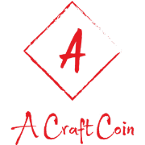

This coin is just like bit coin growing astonishingly and helps the art and craft industry
Introdusing the craft coin!
With one coin worth 5$ last month and now to 30$ it is the fastest growing coin with a 3% drop rate, as we are speaking the value has increased by 0.2 aud.
Now we will look at the benifites of the craft coin
Now we will head on to the slides made by a special person who earned 60k in this month by investing into our craft coin!